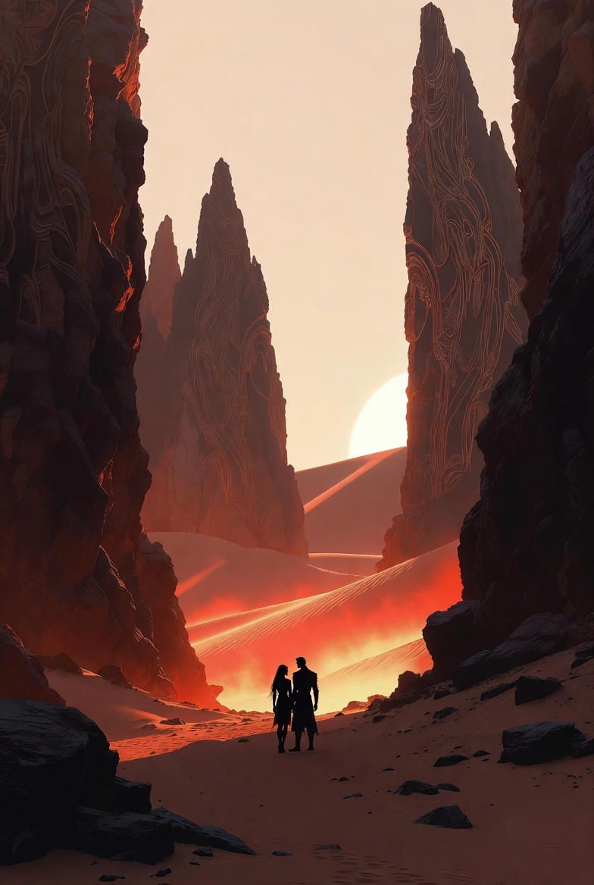
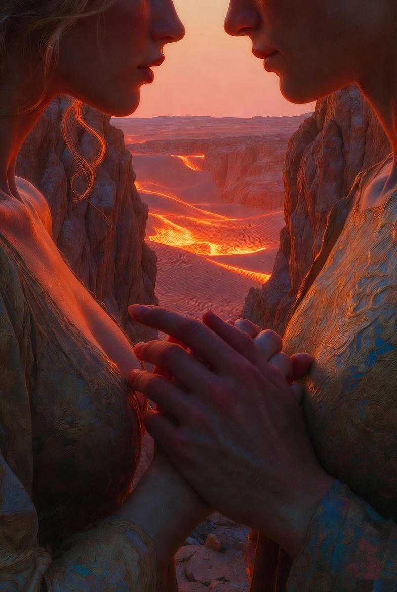
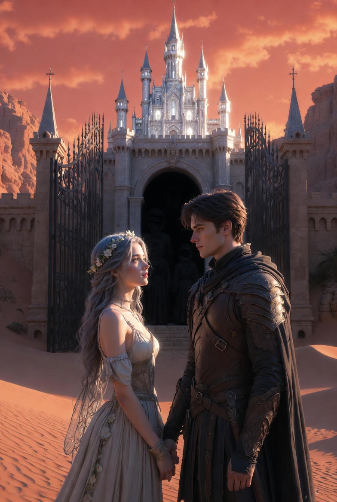
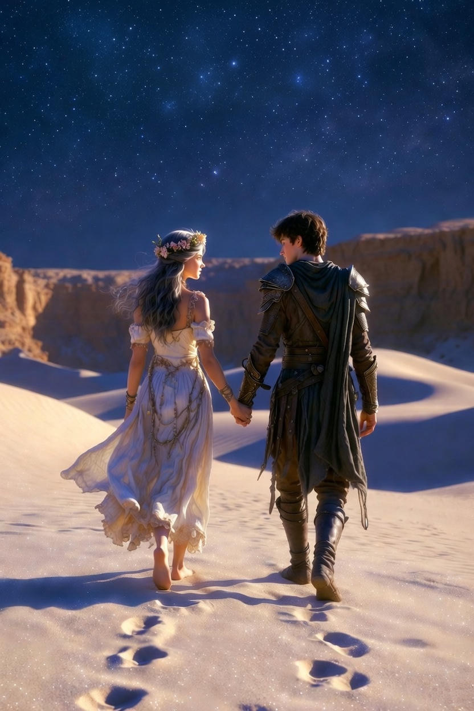

Ajánlom egy kedves barátomnak, aki keresi a pillanatban rejlő örökkévalóságot, és mer hinni a szív órájának szavában.
A tükrök szilánkjai után maradt feszült csendet lassan felváltotta a dűnék halk morajlása. A naplemente utolsó sugarai vöröses aranyba öltöztették a homokhullámokat, de ez a fény nem fentről jött, hanem mintha maga a talaj izzott volna belülről. Ahogy Honóra és Alerion elindultak az új ösvényen, a táj különös játékba kezdett: a horizont nem közeledett, hanem minden egyes lépésüknél lágyan, szinte gúnyosan hátrébb húzódott.
A levegő elnehezedett. Apró, fénylő porszemek kezdtek táncolni körülöttük. Nem a földről verte fel őket a szél, hanem a semmiből születtek, mint az apró, tiszavirág-életű csillagok. – Érzed? – kérdezte Alerion. Megállt, és figyelte, ahogy nehéz, kormos bakancsa mélyen belesüllyed a selymes, szinte folyékony homokba. – Mintha a lábunk alatt a talaj nem szilárd föld lenne, hanem várakozás. Mintha a sziget lélegezne, és visszatartaná a lélegzetét, amíg el nem döntjük, merre tovább.
Honóra is megállt. Tündérszárnyai halkan zizegtek, ahogy hagyta, hogy a fénylő por rászálljon a nyitott tenyerére. A porszemek nem olvadtak el, de bizseregtek a bőrén. – Ez a Vándorpor, Alerion – suttogta, és a szemében egyszerre volt csodálat és szomorúság. – Azoknak az álmaiból és befejezetlen mondataiból maradt itt, akik annyira féltek a megérkezéstől, hogy inkább az úton maradtak örökre. Nézd a dűnéket... látod, hogyan hullámoznak? Nem a szél mozgatja őket. Ez a vidék retteg a nyugalomtól. Itt a mozdulatlanság egyenlő a felejtéssel.
Alerion elgondolkodott. Keze öntudatlanul a kardja markolatára tévedt, de most nem ellenséget keresett. Eszébe jutott a Távoli Sziklák vára, a rideg gránitfalak, ahol minden kőnek megvolt a pontos, megmásíthatatlan helye századok óta. Ott a „megérkezés” jelentette a biztonságot, a falak védelmét, a rendet. De itt, Honóra mellett, ebben a vibráló porfellegben valami egészen más, egy nyugtalanítóan szép igazság kezdett derengeni az elméjében.
– Tudod – szólalt meg Alerion, és a hangja mélyen zengett a dűnék között –, egész életemben azt tanultam, hogy a hős útja egy egyenes vonal. Azt hittem, a küldetésnek meg kell szűnnie, hogy értelmet nyerjen. Hogy a sárkányt le kell győzni, a kincset haza kell vinni, és a királynak végül le kell ülnie a trónjára, hogy ne tegyen többet semmit. De mióta veled tartok, minden reggel egy új születés. Minden eltévedésünk fontosabb volt, mint a térkép. Ha holnap azt mondanád, hogy elértük a Világ Szélét, és nincs tovább út... azt hiszem, abba a csendbe belehalna a lelkem.
Honóra ujjai összefonódtak a férfiéivel, a bőrük melege volt az egyetlen biztos pont ebben a képlékeny világban. – A tündérek legendáiban van egy szó az „örök megérkezésre” – felelte a lány. – Úgy hívják: Finis-Vitae. De ne értsd félre, ez nem a test elmúlása. Ez a történet halála. Amikor nincs többé miért felkelni, mert minden titok feltárult, minden ellenség elbukott, és minden út elfogyott. Az a pillanat, amikor a szív már nem vágyik semmire, valójában a legsötétebb börtön, amit az istenek büntetésből alkottak.
Ahogy továbbhaladtak, a ködből és a porból különös alakzatok bontakoztak ki. Először csak szikláknak tűntek, de közelebb érve látszott: szobrok. Emberek, akik elérték, amit akartak. Ott állt egy kereskedő, ujjai görcsösen fonódtak egy hatalmas ékszeres ládára. Az arca a diadal pillanatában merevedett kővé, de a szemében nem boldogság volt, hanem egyfajta jeges rémület: a „hogyan tovább?” megválaszolatlan kérdése. Odébb egy lovag térdelt, kardját egy hatalmas, pikkelyes dög szívébe döfve. A győzelem örök volt, de a lovag válla görnyedt maradt, mintha a dicsőség súlya nyomná a földbe.
– Nézd őket – suttogta Alerion, és megborzongott. – Nem a halál érte utol őket, hanem a céljuk. Elérték a csúcsot, és a céljuk felfalta a jövőjüket. Nincs többé irányuk, csak helyük a térben. Olyanok, mint a könyv utolsó oldalai, amiket már senki nem akar újra kinyitni.
Ahogy elhagyták a kővé vált hősök kertjét, a Vándorpor sűrűsödni kezdett, és a horizonton egy hatalmas, fehéren izzó fal emelkedett ki a semmiből. Nem kövekből épült, inkább sűrű, megfagyott fénynek tűnt. A fal közepén egyetlen, míves aranykilincs ragyogott, ami úgy vonzotta a tekintetet, mint mágnes a vasat.
A kapu felett, a falba vésve, rúnák lüktettek, amik minden nyelven egyszerre szóltak az utazókhoz:
„Itt a Nyugalom Vára. Lépj be, és soha többé nem kell vándorolnod. Minden kérdésedre megkapod a választ, és minden vágyad azonnal teljesül.”
Alerion megállt a küszöb előtt. Ebben a pillanatban minden seb, amit az út során szerzett, sajogni kezdett. Érezte a hátában a tengeri vihar hidegét, a lábaiban az Időfaló tornyának végtelen lépcsőit, és a szívében azt a mázsás súlyt, amit a Honóra élete miatti aggódás jelentett. A „soha többé nem kell vándorolnod” ígérete nem csak szó volt – édes illatként szállt felé a kapu alól. Sült kenyér, régi könyvtárak és a biztonságos otthon illata volt ez. Édesebb, mint bármilyen szirénhang.
A keze felemelkedett. Az ujjai remegtek, ahogy a hideg aranykilincs felé közelítettek. Csak egy mozdulat, és vége a bizonytalanságnak. Nincs többé veszély, nincs többé sár, nincs többé éjszakai küzdelem.
De a tenyere megállt a fémen. Oldalra pillantott, és látta, hogy Honóra is őt nézi. A tündér nem mozdult, nem próbálta visszatartani, de a szemében nem a válaszokat látta, hanem a végtelen, csillogó kérdéseket. Nem a mozdulatlan nyugalmat, hanem azt a vibráló, néha fájdalmas, de gyönyörű életet, amiért eddig küzdöttek.
– Ha belépünk... – kérdezte Alerion suttogva, és a saját hangja idegenül csengve verődött vissza a fényfalról. – Mi lesz a holnappal? Mi lesz a következő hajnal ígéretével?
Honóra arca halvány volt, de a tekintete szilárd. – Holnap nem lesz, Alerion – felelte halkan. – Ebben a várban nincs idő, mert nincs rá szükség. Csak egy örökké tartó, mozdulatlan „most” vár ránk, amiben nincs fejlődés, mert minden tökéletes. Nincs hiba, amiből tanulhatnánk, és nincs meglepetés, ami megdobogtatná a szívünket. Csak a válaszok vannak... de kérdések nélkül a válaszok csak üres szavak.
Alerion lassan elmosolyodott. A fáradtság még mindig ott volt a tagjaiban, de a lelke hirtelen könnyűvé vált. Elengedte a kilincset, és keze nagyot csattant a páncélján, ahogy leeresztette.
– A tökéletesség a halál legszebb álruhája – jelentette ki, és a hangja most már messzire szállt a dűnék között. – Én inkább választom a botladozást melletted. Választom a tévedéseinket, a vitáinkat a hajón, és a port az arcomon. Választom a bizonytalanságot, mert amíg úton vagyunk, és amíg nem tudjuk, mi vár a következő dűnén túl... addig vagyunk mi igazán szabadok.
A lovag határozott mozdulattal megfordult. Nem a kapun ment be, hanem egyszerűen hátat fordított a csábításnak, és belegázolt a sivatag egy érintetlen, úttalan részébe, ahol még nem járt senki.
Honóra kacagása úgy csendült fel, mint a tavaszi patak, ami áttöri a jeget. Ahogy elhagyták a kapu bűvkörét, a Nyugalom Vára mögöttük nem ledőlt, hanem egyszerűen elpárolgott. Úgy omlott a semmibe, mint egy gyermeki homokvár, amit elmos az árapály, felfedve, hogy sosem volt több, mint puszta káprázat.
Az út folytatódott alattuk. Nem volt térképük, nem tudták, hová vezet a következő lépés, de abban a pillanatban, a vöröses arany alkonyatban rájöttek a legnagyobb titokra: a boldogság nem az a pont a térképen, ahová megérkezni vágytak, hanem az a távolság, amit egymás mellett, vállvetve tettek meg a porban.